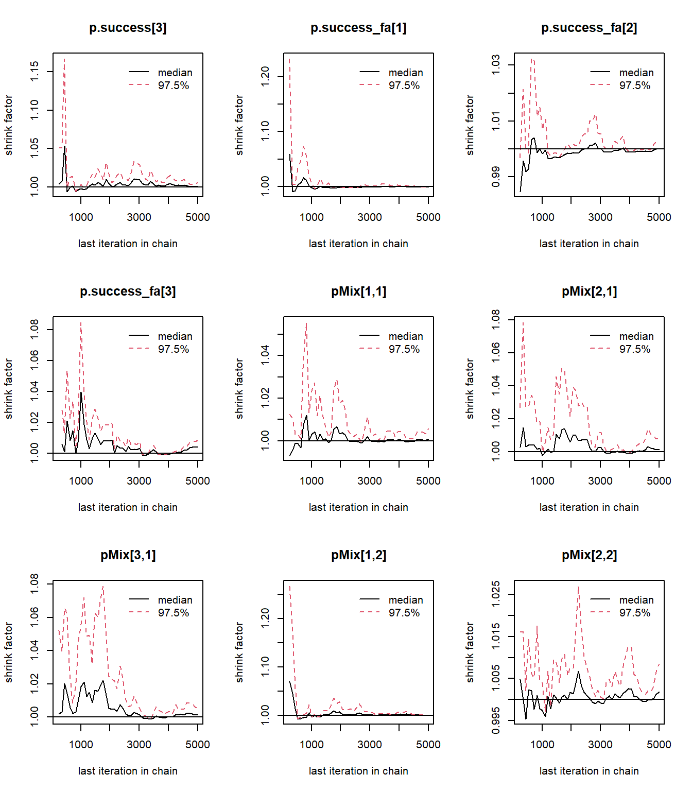
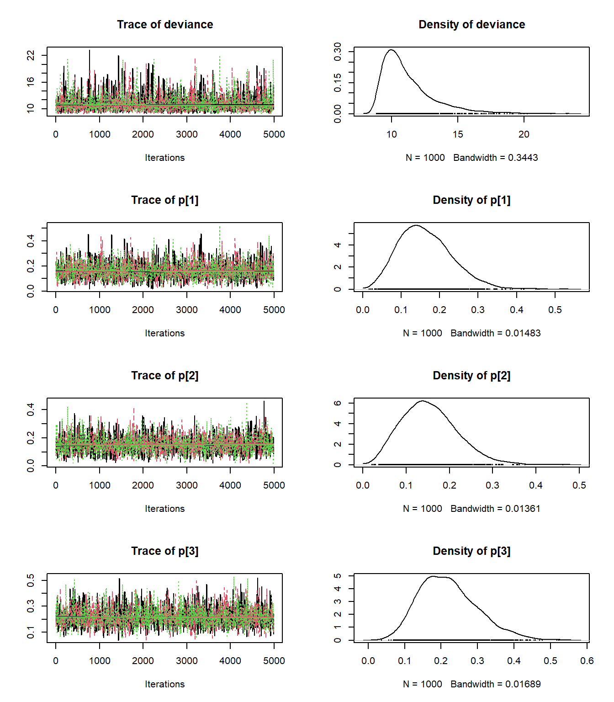
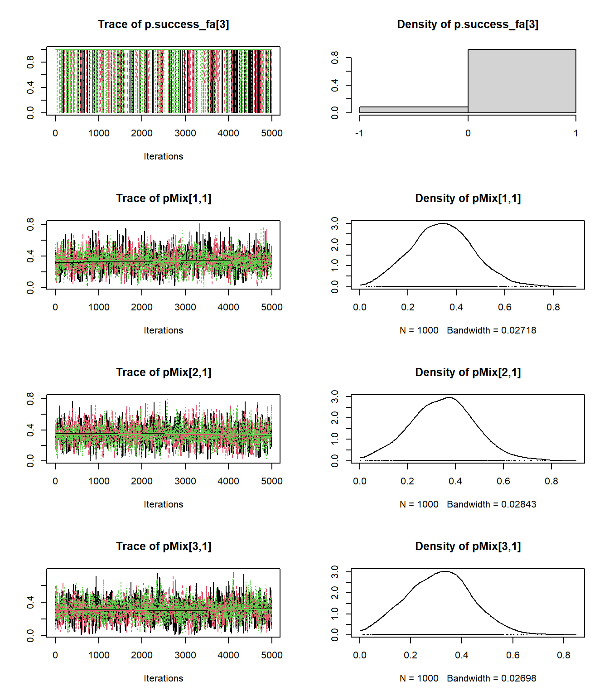
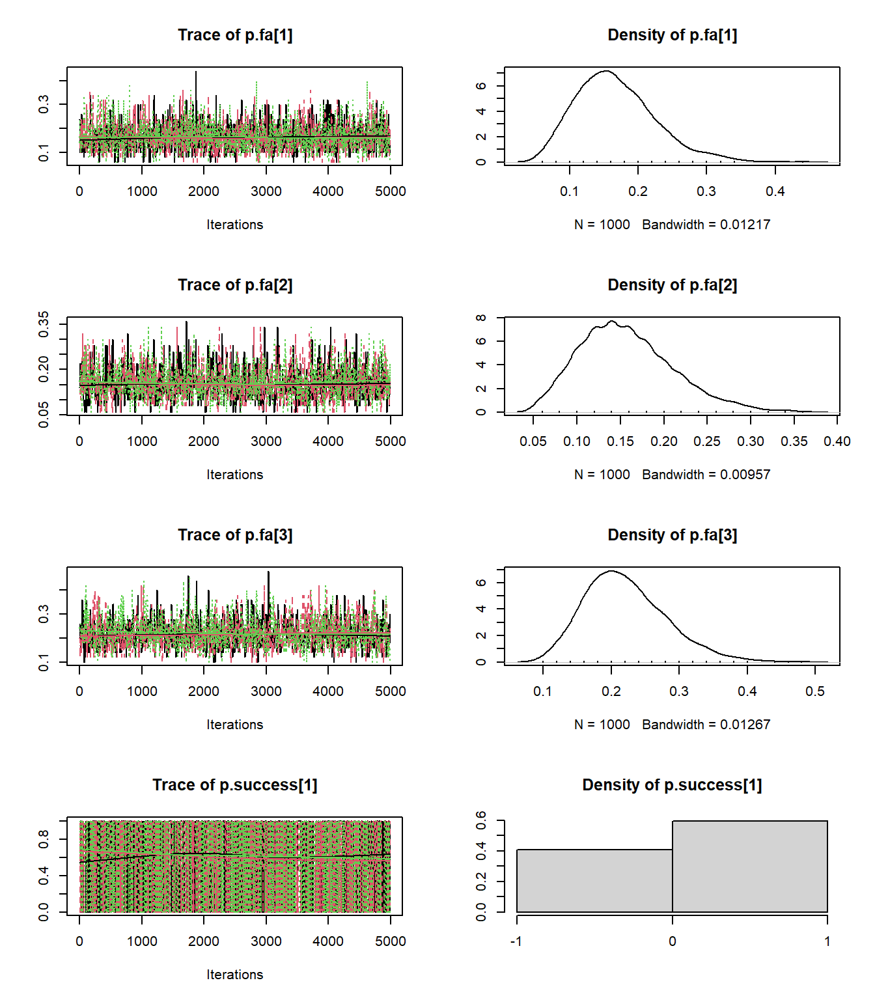
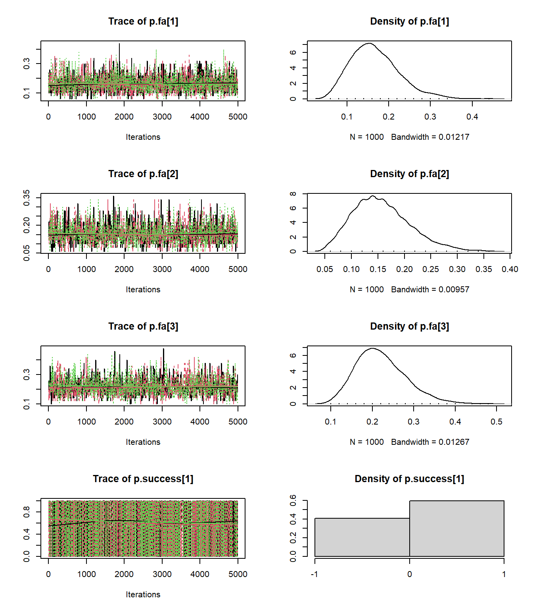

Bouquet - Borrowing X-cohort
Anh Nguyen Duc
05 March, 2023
0.1 WinBUGs model for binary EXNEX model with stochastic mixture weights
This is based on section 5.3 of https://onlinelibrary.wiley.com/action/downloadSupplement?doi=10.1002%2Fpst.1730&file=pst1730-sup-0001-supplementary.pdf
Original paper is https://onlinelibrary.wiley.com/doi/epdf/10.1002/pst.1730
### Model definition
binary_exnex_model2 <- function() {
## Data to be specify in the input
#-------------------------------------------------------------------------------
# Nexch - number of exchangeable components
# Nmix - number of mixture weights and must be Nexch+1
# Nstrata - number of strata e.g. studies or cohort (in platform trial)
# pMix - matrix of Nmix * Nstrata mixture weights (each col summing up to 1)
# n - vector of Nstrata elements storing patient numbers for each stratum
# r - vector of Nstrata elements storing response numbers for each stratum
# n_fa - vector of Nstrata elements storing patient numbers for each stratum at final analysis
# mu.mean - vector of Nexch prior mean(s)
# mu.prec - vector of Nexch prior precision(s)
# tau.HN.scale - scale parameter of Half-Normal prior for tau
# nex.mean - prior mean for non-exchangeable component
# nex.prec - prior precision for non-exchangeable component
# p.cut - clinically relevant threshold for response rate to compare against
## Parameter(s) to be monitored
# p - posterior response rate
# p.success - posterior indicator if p > p.cut
# pMix - posterior mixture weight to test for "exchangeability"
# p.success_fa - posterior indicator if r_fa/n_fa > p.cut
#-------------------------------------------------------------------------------
# prior distributions for EX-parameters
for (jj in 1:Nexch) {
mu[jj] ~dnorm(mu.mean[jj],mu.prec[jj])
prior.tau.prec[jj] <- pow(tau.HN.scale[jj],-2)
tau[jj] ~ dnorm(0,prior.tau.prec[jj]);I(0.001,)
prec.tau[jj] <- pow(tau[jj],-2)
}
# log-odds parameters under EX
for (jj in 1:Nexch) {
for (j in 1:Nstrata) {
re[jj,j] ~ dnorm(0,prec.tau[jj])
LogOdds[jj,j] <- mu[jj]+re[jj,j]
}
}
# log-odds parameters under NEX
for (j in 1:Nstrata) {
#p_Nmix[j] ~ dbeta(2,2) # slight mod to have flat prior
LogOdds[Nmix,j] ~ dnorm(nex.mean,nex.prec)#<- logit(p_Nmix[j])#
}
# latent mixture indicators:
# exch.index: categorial 1,...,Nmix=Nexch+1
# exch: Nstrata x Nmix matrix of 0/1 elements
for (j in 1:Nstrata) {
exch.index[j] ~ dcat(pMix[1:Nmix,j])
for (jj in 1:Nmix) {
exch[j,jj] <- equals(exch.index[j],jj)
}
}
# pick theta
for (j in 1:Nstrata) {
theta[j] <- LogOdds[exch.index[j],j]
}
# likelihood part
for (i in 1:Nstrata) {
logit( p[i] ) <- theta[i]
p.success[i] <- step(p[i]-p.cut)
r[i] ~ dbin(p[i],n[i])
}
# normalized mixture weights
for (i in 1:Nstrata) {
for (j in 1:Nmix) {
pMix0[j,i] ~ dbeta(2, 2)
}
for (j in 1:Nmix) {
pMix[j,i] <- pMix0[j,i] / sum(pMix0[,i])
}
}
# predictive part
for (i in 1:Nstrata) {
r_fa[i] ~ dbin(p[i], n_fa[i])
p.success_fa[i] <- step(r_fa[i]/n_fa[i]-p.cut)
}
} # end of binary_exnex_model2
write.model(binary_exnex_model2, 'binary_exnex_model2.bug')
### Parameters to monitor
parameters_binary_exnex_model2 <- c('p', 'pMix', 'p.success', 'p.success_fa')
### Data
n <- c('cobi'=19, 'atz+bev'=21, 'ipat+pac'=20)
r <- c( 3, 3, 5)
## EX part
mu.mean <- c(logit(.05), logit(.15)) # ex prior for hyper meanis centered at logit(0.05)
# ex precision for hyperpar mean based on (23) of https://onlinelibrary.wiley.com/action/downloadSupplement?doi=10.1002%2Fpst.1730&file=pst1730-sup-0001-supplementary.pdf
mu.prec <- 1/sqrt( ( 1/inv.logit(mu.mean) + 1/(1-inv.logit(mu.mean)) )) # still missing s^2 but this would only make the prior more non-informative
tau.HN.scale <- c(1,1)
## NEX part
nex.mean<-logit(.15) # prior mean for nex part
# prior precision for nex part based on (20) of https://onlinelibrary.wiley.com/action/downloadSupplement?doi=10.1002%2Fpst.1730&file=pst1730-sup-0001-supplementary.pdf
nex.prec <- 1/sqrt( 1/inv.logit(nex.mean) + 1/(1-inv.logit(nex.mean)) * 1e5 )
p.cut<-.15
pMix<-c(1,0,0)
Nstrata <- n %>% length
Nexch <- mu.mean %>% length
Nmix <- Nexch + 1
n_fa <- c(50, 50, 50)
data_binary_exnex_model2 <- list(Nexch=Nexch, Nmix=Nmix,
Nstrata=Nstrata,
n=n, r=r, n_fa=n_fa,
mu.mean=mu.mean, mu.prec=mu.prec,
tau.HN.scale=tau.HN.scale,
nex.mean=nex.mean, nex.prec=nex.prec,
p.cut=p.cut
)
### Inits
inits_binary_exnex_model2 <- function() {
list(
"mu"=rnorm(Nexch),
"tau"=rnorm(Nexch) %>% abs,
"pMix0"= rbeta(Nmix*Nstrata, 2, 2) %>% matrix(nrow=Nstrata)
)
} # end of inits_binary_exnex_model
### Run MCMC
# JAGS
set.seed(36)
binary_exnex_jag2 <- jags(data = data_binary_exnex_model2,
inits = inits_binary_exnex_model2,
parameters.to.save = parameters_binary_exnex_model2,
model.file = "binary_exnex_model2.bug",
n.chains=3, n.iter=1e4, n.burnin=5e3)## module glm loaded## Compiling model graph
## Resolving undeclared variables
## Allocating nodes
## Graph information:
## Observed stochastic nodes: 3
## Unobserved stochastic nodes: 28
## Total graph size: 112
##
## Initializing modelprint(binary_exnex_jag2)## Inference for Bugs model at "binary_exnex_model2.bug", fit using jags,
## 3 chains, each with 10000 iterations (first 5000 discarded), n.thin = 5
## n.sims = 3000 iterations saved
## mu.vect sd.vect 2.5% 25% 50% 75% 97.5% Rhat n.eff
## p[1] 0.164 0.069 0.050 0.113 0.156 0.207 0.317 1.001 3000
## p[2] 0.154 0.064 0.048 0.107 0.148 0.193 0.291 1.004 1100
## p[3] 0.220 0.079 0.090 0.162 0.212 0.269 0.395 1.001 3000
## p.success[1] 0.536 0.499 0.000 0.000 1.000 1.000 1.000 1.001 3000
## p.success[2] 0.491 0.500 0.000 0.000 0.000 1.000 1.000 1.002 1200
## p.success[3] 0.802 0.398 0.000 1.000 1.000 1.000 1.000 1.002 1300
## p.success_fa[1] 0.510 0.500 0.000 0.000 1.000 1.000 1.000 1.001 3000
## p.success_fa[2] 0.484 0.500 0.000 0.000 0.000 1.000 1.000 1.001 3000
## p.success_fa[3] 0.746 0.436 0.000 0.000 1.000 1.000 1.000 1.001 3000
## pMix[1,1] 0.341 0.129 0.098 0.255 0.339 0.425 0.599 1.001 3000
## pMix[2,1] 0.348 0.133 0.086 0.257 0.349 0.436 0.615 1.001 3000
## pMix[3,1] 0.311 0.126 0.068 0.222 0.312 0.395 0.562 1.004 1700
## pMix[1,2] 0.341 0.135 0.079 0.248 0.345 0.432 0.617 1.001 3000
## pMix[2,2] 0.346 0.133 0.090 0.254 0.346 0.434 0.607 1.002 1300
## pMix[3,2] 0.313 0.129 0.074 0.222 0.313 0.402 0.573 1.001 2300
## pMix[1,3] 0.338 0.135 0.090 0.243 0.334 0.426 0.618 1.001 2400
## pMix[2,3] 0.349 0.136 0.096 0.254 0.349 0.437 0.626 1.001 3000
## pMix[3,3] 0.314 0.130 0.072 0.223 0.315 0.400 0.577 1.001 3000
## deviance 11.220 1.984 9.035 9.832 10.645 11.990 16.667 1.004 660
##
## For each parameter, n.eff is a crude measure of effective sample size,
## and Rhat is the potential scale reduction factor (at convergence, Rhat=1).
##
## DIC info (using the rule, pD = var(deviance)/2)
## pD = 2.0 and DIC = 13.2
## DIC is an estimate of expected predictive error (lower deviance is better).binary_exnex_mcmc2 <- binary_exnex_jag2 %>% as.mcmc.rjags
binary_exnex_mcmc2 %>% summary##
## Iterations = 1:4996
## Thinning interval = 5
## Number of chains = 3
## Sample size per chain = 1000
##
## 1. Empirical mean and standard deviation for each variable,
## plus standard error of the mean:
##
## Mean SD Naive SE Time-series SE
## deviance 11.2204 1.98427 0.036228 0.039478
## p[1] 0.1638 0.06938 0.001267 0.001311
## p[2] 0.1539 0.06370 0.001163 0.001174
## p[3] 0.2196 0.07901 0.001443 0.001615
## p.success[1] 0.5357 0.49881 0.009107 0.009095
## p.success[2] 0.4913 0.50001 0.009129 0.009204
## p.success[3] 0.8023 0.39831 0.007272 0.007776
## p.success_fa[1] 0.5103 0.49998 0.009128 0.009131
## p.success_fa[2] 0.4837 0.49982 0.009125 0.009272
## p.success_fa[3] 0.7457 0.43556 0.007952 0.007964
## pMix[1,1] 0.3408 0.12935 0.002362 0.002362
## pMix[2,1] 0.3477 0.13303 0.002429 0.002687
## pMix[3,1] 0.3115 0.12624 0.002305 0.002405
## pMix[1,2] 0.3412 0.13472 0.002460 0.002546
## pMix[2,2] 0.3455 0.13347 0.002437 0.002374
## pMix[3,2] 0.3133 0.12850 0.002346 0.002222
## pMix[1,3] 0.3378 0.13533 0.002471 0.002471
## pMix[2,3] 0.3485 0.13557 0.002475 0.002476
## pMix[3,3] 0.3137 0.12983 0.002370 0.002429
##
## 2. Quantiles for each variable:
##
## 2.5% 25% 50% 75% 97.5%
## deviance 9.03475 9.8316 10.6450 11.9904 16.6670
## p[1] 0.05005 0.1133 0.1565 0.2068 0.3175
## p[2] 0.04785 0.1074 0.1483 0.1934 0.2907
## p[3] 0.09022 0.1617 0.2119 0.2688 0.3954
## p.success[1] 0.00000 0.0000 1.0000 1.0000 1.0000
## p.success[2] 0.00000 0.0000 0.0000 1.0000 1.0000
## p.success[3] 0.00000 1.0000 1.0000 1.0000 1.0000
## p.success_fa[1] 0.00000 0.0000 1.0000 1.0000 1.0000
## p.success_fa[2] 0.00000 0.0000 0.0000 1.0000 1.0000
## p.success_fa[3] 0.00000 0.0000 1.0000 1.0000 1.0000
## pMix[1,1] 0.09829 0.2547 0.3386 0.4251 0.5987
## pMix[2,1] 0.08593 0.2575 0.3489 0.4360 0.6152
## pMix[3,1] 0.06813 0.2217 0.3122 0.3953 0.5620
## pMix[1,2] 0.07870 0.2480 0.3455 0.4318 0.6169
## pMix[2,2] 0.08997 0.2540 0.3456 0.4340 0.6067
## pMix[3,2] 0.07403 0.2217 0.3128 0.4016 0.5728
## pMix[1,3] 0.08950 0.2429 0.3337 0.4257 0.6179
## pMix[2,3] 0.09619 0.2537 0.3488 0.4368 0.6260
## pMix[3,3] 0.07162 0.2227 0.3147 0.4001 0.5774binary_exnex_mcmc2 %>% gelman.plot
binary_exnex_mcmc2 %>% plot
0.2 WinBUGs model for binary EXNEX model with fixed mixture weights
This is based on section 5.3 of https://onlinelibrary.wiley.com/action/downloadSupplement?doi=10.1002%2Fpst.1730&file=pst1730-sup-0001-supplementary.pdf
Original paper is https://onlinelibrary.wiley.com/doi/epdf/10.1002/pst.1730
### Model definition
binary_exnex_model <- function() {
## Data to be specify in the input
#-------------------------------------------------------------------------------
# Nexch - number of exchangeable components
# Nmix - number of mixture weights and must be Nexch+1
# Nstrata - number of strata e.g. studies or cohort (in platform trial)
# pMix - matrix of Nmix * Nstrata mixture weights (each col summing up to 1)
# n - vector of Nstrata elements storing patient numbers for each stratum
# r - vector of Nstrata elements storing response numbers for each stratum
# n_fa - vector of Nstrata elements storing patient numbers for each stratum at final analysis
# mu.mean - vector of Nexch prior mean(s)
# mu.prec - vector of Nexch prior precision(s)
# tau.HN.scale - scale parameter of Half-Normal prior for tau
# nex.mean - prior mean for non-exchangeable component
# nex.prec - prior precision for non-exchangeable component
# p.cut - clinically relevant threshold for response rate to compare against
## Parameter(s) to be monitored
# p - posterior response rate
# p.success - posterior indicator if p > p.cut
# p.success_fa - posterior indicator if r_fa/n_fa > p.cut
#-------------------------------------------------------------------------------
# prior distributions for EX-parameters
for (jj in 1:Nexch) {
mu[jj] ~dnorm(mu.mean[jj],mu.prec[jj])
prior.tau.prec[jj] <- pow(tau.HN.scale[jj],-2)
tau[jj] ~ dnorm(0,prior.tau.prec[jj]);I(0.001,)
prec.tau[jj] <- pow(tau[jj],-2)
}
# log-odds parameters under EX
for (jj in 1:Nexch) {
for (j in 1:Nstrata) {
re[jj,j] ~ dnorm(0,prec.tau[jj])
LogOdds[jj,j] <- mu[jj]+re[jj,j]
}
}
# log-odds parameters under NEX
for (j in 1:Nstrata) {
#p_Nmix[j] ~ dbeta(2,2) # slight mod to have flat prior
LogOdds[Nmix,j] ~ dnorm(nex.mean,nex.prec)#<- logit(p_Nmix[j])#
}
# latent mixture indicators:
# exch.index: categorial 1,...,Nmix=Nexch+1
# exch: Nstrata x Nmix matrix of 0/1 elements
for (j in 1:Nstrata) {
exch.index[j] ~ dcat(pMix[1:Nmix,j])
for (jj in 1:Nmix) {
exch[j,jj] <- equals(exch.index[j],jj)
}
}
# pick theta
for (j in 1:Nstrata) {
theta[j] <- LogOdds[exch.index[j],j]
}
# likelihood part
for (i in 1:Nstrata) {
logit( p[i] ) <- theta[i]
p.success[i] <- step(p[i]-p.cut)
r[i] ~ dbin(p[i],n[i])
}
# predictive part
for (i in 1:Nstrata) {
r_fa[i] ~ dbin(p[i], n_fa[i])
p.success_fa[i] <- step(r_fa[i]/n_fa[i]-p.cut)
}
} # end of binary_exnex_model
write.model(binary_exnex_model, 'binary_exnex_model.bug')
### Parameters to monitor
parameters_binary_exnex_model <- c('p', 'p.success', 'p.success_fa')
### Data
data_binary_ex_model <- list(pMix=cbind(c(1,0,0), c(1,0,0), c(1,0,0)),
# full exchangeable
Nexch=Nexch, Nmix=Nmix,
Nstrata=Nstrata,
n_fa=n_fa, n=n, r=r,
mu.mean=mu.mean, mu.prec=mu.prec,
tau.HN.scale=tau.HN.scale,
nex.mean=nex.mean, nex.prec=nex.prec, p.cut=p.cut
)
data_binary_nex_model <- list(pMix=cbind(c(0,0,1), c(0,0,1), c(0,0,1)),
# non-exchangeable
Nexch=Nexch, Nmix=Nmix,
Nstrata=Nstrata,
n_fa=n_fa, n=n, r=r,
mu.mean=mu.mean, mu.prec=mu.prec,
tau.HN.scale=tau.HN.scale,
nex.mean=nex.mean, nex.prec=nex.prec, p.cut=p.cut
)
### Inits
inits_binary_exnex_model <- function() {
list(
"mu"=rnorm(Nexch),
"tau"=rnorm(Nexch) %>% abs
)
} # end of inits_binary_exnex_model
### Run MCMC
# JAGS
set.seed(36)
binary_ex_jag <- jags(data = data_binary_ex_model,
inits = inits_binary_exnex_model,
parameters.to.save = parameters_binary_exnex_model,
model.file = "binary_exnex_model.bug",
n.chains=3, n.iter=1e4, n.burnin=5e3)## Compiling model graph
## Resolving undeclared variables
## Allocating nodes
## Graph information:
## Observed stochastic nodes: 3
## Unobserved stochastic nodes: 19
## Total graph size: 97
##
## Initializing modelprint(binary_ex_jag)## Inference for Bugs model at "binary_exnex_model.bug", fit using jags,
## 3 chains, each with 10000 iterations (first 5000 discarded), n.thin = 5
## n.sims = 3000 iterations saved
## mu.vect sd.vect 2.5% 25% 50% 75% 97.5% Rhat n.eff
## p[1] 0.171 0.063 0.062 0.127 0.165 0.210 0.310 1.001 3000
## p[2] 0.166 0.061 0.066 0.122 0.160 0.202 0.308 1.003 830
## p[3] 0.203 0.070 0.091 0.153 0.193 0.243 0.366 1.004 620
## p.success[1] 0.594 0.491 0.000 0.000 1.000 1.000 1.000 1.001 3000
## p.success[2] 0.573 0.495 0.000 0.000 1.000 1.000 1.000 1.003 880
## p.success[3] 0.767 0.423 0.000 1.000 1.000 1.000 1.000 1.002 1400
## p.success_fa[1] 0.560 0.496 0.000 0.000 1.000 1.000 1.000 1.001 3000
## p.success_fa[2] 0.542 0.498 0.000 0.000 1.000 1.000 1.000 1.002 1300
## p.success_fa[3] 0.698 0.459 0.000 0.000 1.000 1.000 1.000 1.001 3000
## deviance 11.016 1.824 9.059 9.797 10.485 11.670 16.103 1.001 3000
##
## For each parameter, n.eff is a crude measure of effective sample size,
## and Rhat is the potential scale reduction factor (at convergence, Rhat=1).
##
## DIC info (using the rule, pD = var(deviance)/2)
## pD = 1.7 and DIC = 12.7
## DIC is an estimate of expected predictive error (lower deviance is better).binary_ex_mcmc <- binary_ex_jag %>% as.mcmc.rjags
binary_ex_mcmc %>% summary##
## Iterations = 1:4996
## Thinning interval = 5
## Number of chains = 3
## Sample size per chain = 1000
##
## 1. Empirical mean and standard deviation for each variable,
## plus standard error of the mean:
##
## Mean SD Naive SE Time-series SE
## deviance 11.0163 1.82445 0.033310 0.042932
## p[1] 0.1706 0.06302 0.001151 0.001403
## p[2] 0.1659 0.06123 0.001118 0.001955
## p[3] 0.2033 0.07032 0.001284 0.002235
## p.success[1] 0.5940 0.49117 0.008967 0.010056
## p.success[2] 0.5727 0.49477 0.009033 0.013567
## p.success[3] 0.7667 0.42302 0.007723 0.010727
## p.success_fa[1] 0.5600 0.49647 0.009064 0.010249
## p.success_fa[2] 0.5417 0.49834 0.009098 0.013113
## p.success_fa[3] 0.6980 0.45920 0.008384 0.010272
##
## 2. Quantiles for each variable:
##
## 2.5% 25% 50% 75% 97.5%
## deviance 9.05911 9.7972 10.4845 11.6703 16.1031
## p[1] 0.06250 0.1268 0.1648 0.2100 0.3096
## p[2] 0.06605 0.1223 0.1600 0.2020 0.3080
## p[3] 0.09142 0.1527 0.1930 0.2426 0.3657
## p.success[1] 0.00000 0.0000 1.0000 1.0000 1.0000
## p.success[2] 0.00000 0.0000 1.0000 1.0000 1.0000
## p.success[3] 0.00000 1.0000 1.0000 1.0000 1.0000
## p.success_fa[1] 0.00000 0.0000 1.0000 1.0000 1.0000
## p.success_fa[2] 0.00000 0.0000 1.0000 1.0000 1.0000
## p.success_fa[3] 0.00000 0.0000 1.0000 1.0000 1.0000binary_ex_mcmc %>% gelman.plot

binary_ex_mcmc %>% plot 


set.seed(36)
binary_nex_jag <- jags(data = data_binary_nex_model,
inits = inits_binary_exnex_model,
parameters.to.save = parameters_binary_exnex_model,
model.file = "binary_exnex_model.bug",
n.chains=3, n.iter=1e4, n.burnin=5e3)## Compiling model graph
## Resolving undeclared variables
## Allocating nodes
## Graph information:
## Observed stochastic nodes: 3
## Unobserved stochastic nodes: 19
## Total graph size: 97
##
## Initializing modelprint(binary_nex_jag)## Inference for Bugs model at "binary_exnex_model.bug", fit using jags,
## 3 chains, each with 10000 iterations (first 5000 discarded), n.thin = 5
## n.sims = 3000 iterations saved
## mu.vect sd.vect 2.5% 25% 50% 75% 97.5% Rhat n.eff
## p[1] 0.158 0.081 0.035 0.098 0.146 0.209 0.344 1.001 3000
## p[2] 0.142 0.075 0.030 0.085 0.132 0.190 0.317 1.011 200
## p[3] 0.246 0.091 0.097 0.180 0.239 0.304 0.444 1.005 540
## p.success[1] 0.482 0.500 0.000 0.000 0.000 1.000 1.000 1.002 1900
## p.success[2] 0.409 0.492 0.000 0.000 0.000 1.000 1.000 1.010 220
## p.success[3] 0.852 0.355 0.000 1.000 1.000 1.000 1.000 1.003 1000
## p.success_fa[1] 0.486 0.500 0.000 0.000 0.000 1.000 1.000 1.001 3000
## p.success_fa[2] 0.417 0.493 0.000 0.000 0.000 1.000 1.000 1.006 340
## p.success_fa[3] 0.812 0.391 0.000 1.000 1.000 1.000 1.000 1.005 600
## deviance 11.993 2.532 9.093 10.175 11.316 13.094 18.596 1.001 3000
##
## For each parameter, n.eff is a crude measure of effective sample size,
## and Rhat is the potential scale reduction factor (at convergence, Rhat=1).
##
## DIC info (using the rule, pD = var(deviance)/2)
## pD = 3.2 and DIC = 15.2
## DIC is an estimate of expected predictive error (lower deviance is better).binary_nex_mcmc <- binary_nex_jag %>% as.mcmc.rjags
binary_nex_mcmc %>% summary##
## Iterations = 1:4996
## Thinning interval = 5
## Number of chains = 3
## Sample size per chain = 1000
##
## 1. Empirical mean and standard deviation for each variable,
## plus standard error of the mean:
##
## Mean SD Naive SE Time-series SE
## deviance 11.9930 2.53169 0.046222 0.072539
## p[1] 0.1582 0.08140 0.001486 0.001486
## p[2] 0.1422 0.07496 0.001369 0.003226
## p[3] 0.2461 0.09089 0.001659 0.002867
## p.success[1] 0.4820 0.49976 0.009124 0.009327
## p.success[2] 0.4087 0.49167 0.008977 0.017289
## p.success[3] 0.8517 0.35549 0.006490 0.009896
## p.success_fa[1] 0.4857 0.49988 0.009126 0.008720
## p.success_fa[2] 0.4170 0.49315 0.009004 0.015557
## p.success_fa[3] 0.8117 0.39104 0.007139 0.008929
##
## 2. Quantiles for each variable:
##
## 2.5% 25% 50% 75% 97.5%
## deviance 9.09287 10.17523 11.3159 13.0939 18.5962
## p[1] 0.03546 0.09807 0.1460 0.2089 0.3444
## p[2] 0.02997 0.08499 0.1317 0.1901 0.3168
## p[3] 0.09680 0.17980 0.2388 0.3035 0.4441
## p.success[1] 0.00000 0.00000 0.0000 1.0000 1.0000
## p.success[2] 0.00000 0.00000 0.0000 1.0000 1.0000
## p.success[3] 0.00000 1.00000 1.0000 1.0000 1.0000
## p.success_fa[1] 0.00000 0.00000 0.0000 1.0000 1.0000
## p.success_fa[2] 0.00000 0.00000 0.0000 1.0000 1.0000
## p.success_fa[3] 0.00000 1.00000 1.0000 1.0000 1.0000binary_nex_mcmc %>% gelman.plot

binary_nex_mcmc %>% plot


0.3 Credible interval for posterior distribution of “true” response rate
### Credible interval for selected parameters
mcmcplots::caterplot(binary_nex_jag, parms = c('p'), add=F, col='red', labels=n%>%names, cat.shift=-.2, reorder = F)
mcmcplots::caterplot(binary_exnex_jag2, parms = c('p'), add=T, cat.shift=0, labels.loc=F, reorder = F)
mcmcplots::caterplot(binary_ex_jag, parms = c('p'), add=T, col='darkgreen', cat.shift=.2, labels.loc=F, reorder = F)
legend(x=.35, y=1, lty=1, lwd=2, col=c('red', 'blue', 'darkgreen'), legend=c('nex', 'exnex', 'fully ex'))